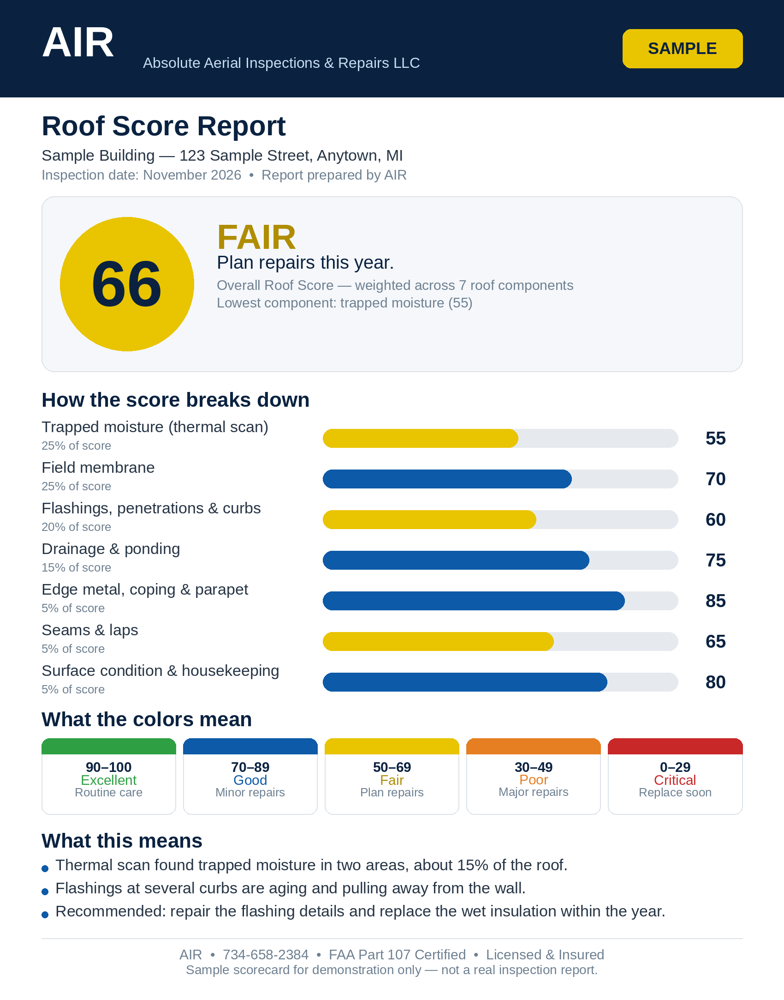

The AIR Roof Score turns a full thermal inspection into a single rating from 1 to 100 — so you can see a roof’s condition, compare buildings, and set budgets without reading a stack of reports.
We score each major part of the roof and roll it into one number. Trapped moisture and the roof membrane carry the most weight, followed by flashings, penetrations and curbs, drainage, edge metal, seams, and surface condition. The result is a scorecard you get with every report — the overall score up front, and the component scores behind it, so you can see exactly what’s driving the number.
The roof is in strong condition. Keep up routine maintenance.
The roof is sound, with minor items to watch or address.
The roof needs attention. Plan and budget for repairs.
Significant problems. Repairs should be a priority.
The roof is in serious condition. Act now to limit further damage.
A Fair, Poor, or Critical score doesn’t just flag a problem — it comes with the repair priorities from your inspection, and we can quote the work.

Sample scorecard — your report includes a scorecard like this for your roof.
You can’t budget for a roof you haven’t measured. Book an inspection and find out where yours stands.